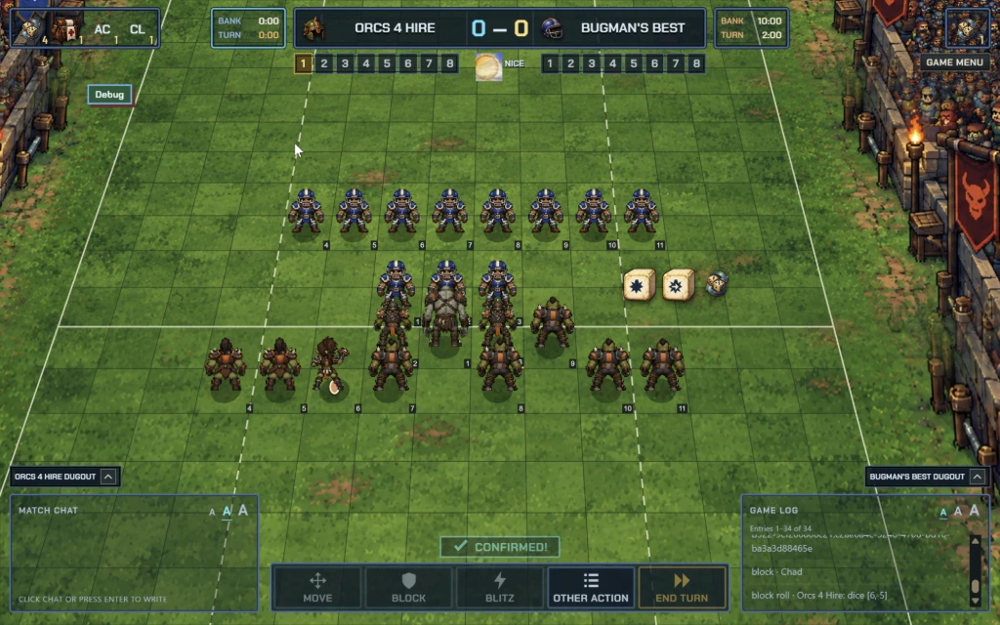

Build a team. Take the pitch.
Play BB2025 in your browser. Build a Human or Orc team, face another coach or a computer opponent, and make the calls on match day.

Your first match
-
Sign in to MUTP
Sign in with Google or an email link to save teams to your account.
-
Save your team
Open Team Builder, choose a Human or Orc roster, then validate and save your team.
-
Choose your opponent
In Play, create a game and share its invitation, or join with an invitation code. For a solo game, choose AI Opponent and select saved teams for both sides.
Want to watch first? Sign in to browse matches. For screen and input guidance, visit Support.
An independent game
Moles Under the Pitch is an independent browser game with its own accounts, separate from FUMBBL. It is not affiliated with, endorsed by, sponsored by, or a replacement for FUMBBL. FUMBBL names and services remain their respective owners’ responsibility.